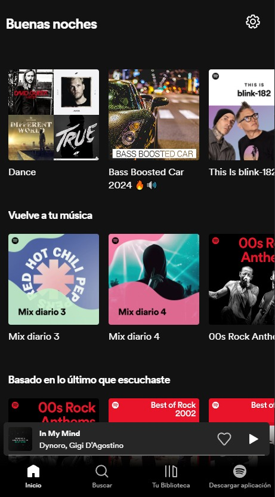
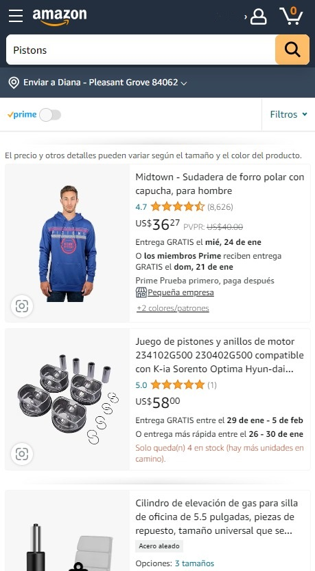

Rule of Thirds
Pinterest organizes its visual content in the form of "pins" and boards. More important or highlighted elements often have a larger size or a more prominent position in the interface.
Contrast
Spotify
Spotify.com Contrast: The use of contrasting colors and fonts helps to draw attention to key elements, such as the search bar and the album covers. This makes it easier for users to scan the page and find what they're looking for.
White Space and Clean Design
Amazon
Amazon.com Amazon's website is minimalist, with ample white space surrounding elements. This minimizes distractions and makes it easy for users to focus on the content.